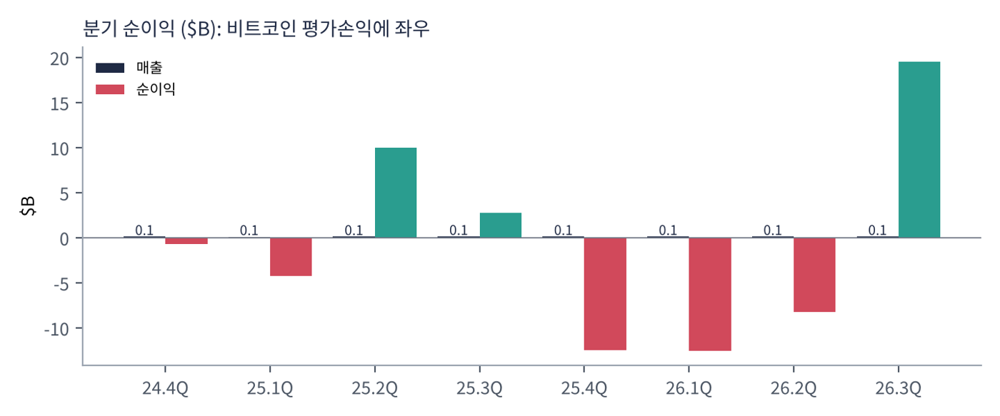
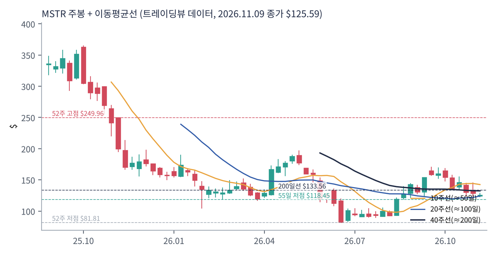
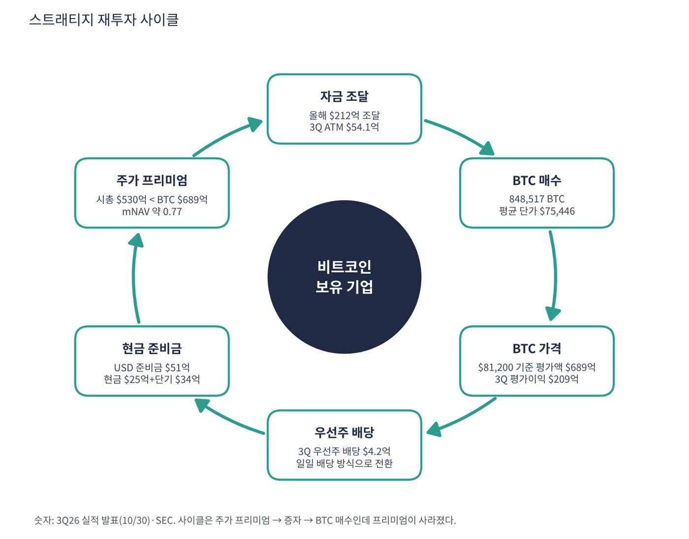

스트래티지(구 마이크로스트래티지)는 기업용 소프트웨어를 팔지만 사실상 '비트코인을 가장 많이 쌓은 상장사'다. 주식과 우선주를 팔아 비트코인을 사는 것이 핵심 전략이다. 소프트웨어 매출은 분기 약 $1.25억에 불과하다.
| 항목 | 내용 |
|---|---|
| 종목 | Strategy (MSTR) · 나스닥 · 비트코인 보유 + 소프트웨어 |
| 시가총액 | 약 $530억 · P/S 111.5배 · 11/9 종가 $125.59(-2.6%) |
| 최근 분기(2026.3Q) | 매출 $1.25억(-3%), 구독 매출 $0.69억(+49%), 영업이익 $209억, 순이익 $195억, EPS $44.75 |
| 비트코인 | 848,517 BTC (10/23~25), 평가액 $689억(BTC $81,200), 평균 단가 $75,446, 올해 BTC 수익률 -3.7% |
| 현금 | 현금 $25.0억 + 단기투자 $34.0억, USD 준비금 $51억 |
| 부채 | 약 $67.8억(트레이딩뷰) + 우선주 |
3분기 영업이익·순이익은 거의 전부 디지털자산 공정가치 평가이익($209.1억)이다. 영업 현금창출과는 무관하다.
| 직책 | 인물 | 역할·특징 |
|---|---|---|
| 회장 | 마이클 세일러 | 비트코인 중심 전략의 설계자 |
| CEO | 퐁 리 | 집행 총괄 |
| CFO | 앤드루 강 | 최근 사임 발표(후임 확인 필요) |
경영 스타일: '주가 프리미엄이 있으면 찍어서 비트코인을 산다'. 올해 보통주 ATM·우선주(STRC 등)로 $212억을 모았다. 3분기에는 STRC를 약 $20.4억 되샀다. 일일 배당 방식 개정도 통과시켰다. CFO 교체는 자금 조달 전략의 연속성에 대한 질문을 만든다.
보통주·전환사채·우선주를 섞어 BTC를 매수하고, BTC 수익률(주당 BTC)을 핵심 지표로 삼는다.
BTC 담보 신용상품(우선주)으로 BTC 보유량을 계속 늘리려 한다.
| 분기 | 매출 | 영업이익 | 영업이익률 | 순이익 | 영업현금 | 비고 | 특이 사항 |
|---|---|---|---|---|---|---|---|
| 24.4Q | $121M | – | – | -$671M | $0.0M | – | |
| 25.1Q | $111M | – | – | -$4,217M | $0.0M | – | |
| 25.2Q | $114M | – | – | $10,021M | $0.0M | – | |
| 25.3Q | $129M | – | – | $2,785M | $0.0M | – | |
| 25.4Q | $123M | – | – | -$12,437M | $0.0M | – | |
| 26.1Q | $124M | – | – | -$12,543M | $0.0M | – | |
| 26.2Q | $122M | – | – | -$8,220M | $0.0M | – | |
| 26.3Q | $125M | – | – | $19,533M | $0.0M | – | BTC 평가이익 $209억 |


흐름 요약: 소프트웨어 매출은 $1.1~1.3억에서 정체한다. 순이익은 비트코인 가격에 따라 -$125억에서 +$195억까지 크게 흔들린다. 영업현금흐름은 이번 수집에서 확인하지 못해 표에 0으로 둔 칸은 '해당 없음/미확인'이다(핵심 자금은 증자·우선주 조달).
순이익 부호 순서는 분기 라벨과 대조 확인이 필요하다(확인 필요). 이익은 평가손익이므로 PER 계산에 쓸 수 없다.
| 구분 | 26.3Q | 비고 |
|---|---|---|
| 소프트웨어 매출 | $1.25억 | 전년 대비 -3% |
| 구독 매출 | $0.69억 | +49%, 매출의 약 55% |
| 디지털자산 평가이익 | $209.1억 | 매출 아님, 평가손익 |
사업 구조는 사실상 두 부분이다: ① 소프트웨어(분기 $1.25억) ② 비트코인 보유(평가손익). 실적은 ②가 100배 이상 크게 좌우한다.
스트래티지가 가려는 곳은 '주당 비트코인을 계속 늘리는 BTC 재무 회사'다. 소프트웨어는 부수 사업이다.
| 축 | 내용 |
|---|---|
| BTC 축적 | 848,517 BTC, 평균 단가 $75,446 |
| 자금 조달 | 보통주 ATM, STRC 등 우선주 |
| 지표 | BTC 수익률(주당 BTC) |
| 현금 준비금 | USD $51억 (배당 방어) |
| 이동평균 | 값 | 종가 대비 | 해석 |
|---|---|---|---|
| 5일선 | $132.40 | -5.1% | |
| 20일선 | $139.94 | -10.3% | |
| 50일선 | $144.39 | -13.0% | |
| 100일선 | $122.31 | +2.7% | |
| 200일선 | $133.56 | -6.0% | $133.6, 현재가 +6% 위 |
11/9 종가 $125.59는 52주 고점 $249.96의 50% 수준, 52주 저점 $81.81 대비 +54%다. 1·3·6·12개월 수익률은 -19%·+31%·-36%·-47%. 2025년 고점에서 큰 폭 하락했고 11/9 종가 $125.59는 200일선($133.6)과 55일 저점($118.5) 사이다.
트레이딩뷰 차트에서 사용자가 직접 그린 작도는 포함하지 않았고, 이동평균·돈키언 등 지표는 일봉 데이터로 직접 계산했다.
| 규칙 | 기준 | 현재 값 | 신호 |
|---|---|---|---|
| 장기 추세 필터 | 종가 vs 200일선 | $125.59 < $133.56 | 매도 |
| 중장기 교차 | 50일선 vs 200일선 | $144.39 > $133.56 | 매수 |
| 단기 교차 | 20일선 vs 50일선 | $139.94 < $144.39 | 매도 |
| 돈키언 채널 | 55일 고가 $171.19 / 저가 $118.45 | 중간값 $144.82 아래 | 매도 |
| 1개월 모멘텀 | 21거래일 수익률 | -18.6% (기준 $154.34) | 매도 |
| 3개월 모멘텀 | 63거래일 수익률 | +30.7% (기준 $96.09) | 매수 |
| 6개월 모멘텀 | 126거래일 수익률 | -35.9% (기준 $195.94) | 매도 |
| 12개월 모멘텀 | 252거래일 수익률 | -47.1% (기준 $237.20) | 매도 |
| 종합 (8개 평균) | -0.50 | 매도 우위 |
해석: 점수 -0.50(매도 우위). 200일선 아래이며 모멘텀이 약하다. 14일 ATR $9.46 (7.5%).
| 가격 | 무엇이 바뀌나 | 의미 |
|---|---|---|
| $133.56 | 200일선 회복 시 장기 신호 매수 전환 | 점수 ±0.25 |
| $144.82 | 돈키언 중간값(55일 고·저점 평균) | 채널 신호 전환선 |
| $139.94 | 20일선 회복 시 단기 흐름 개선 | 단기 추세 신호 |
| $118.45 | 55일 저점 이탈 시 하락 추세 확정 | 손절 판단 기준 |
| 구분 | 가격 | 근거 |
|---|---|---|
| 저항 2 | $133.56 | 200일선 |
| 저항 1 | $132.40 | 5일선 |
| 지지 1 | $122.31 | 100일선 |
| 지지 2 | $118.45 | 55일 저점 |
가치 판단은 BTC 가격에 종속돼 BTC를 직접 보는 것과 위험이 겹친다. 매수하더라도 $118~126에서 소규모로 나눠 한다. 55일 저점 $118.5 이탈 후 종가 $115 이하면 손절한다. 1차 $134(200일선), 2차 $171(55일 고점)에서 익절한다. 확인 신호는 BTC 가격, mNAV 회복, CFO 후임 발표다. 가격대는 내 시나리오이며 매매 권유가 아니다.
| 악재 요인 | 내용 | 강도 |
|---|---|---|
| BTC 가격 하락 | 실적과 자산가치가 BTC에 직결 | 높음 |
| 프리미엄 소멸 | 시총이 BTC 가치보다 작아 증자로 BTC를 늘리기 어려움 | 높음 |
| 우선주 배당·부채 | 연 배당 약 $16.8억 + 부채 $67.8억 | 중간 |
| CFO 사임 | 자금 조달 전략 연속성 우려 | 중간 |
| 회계 변동성 | 공정가치 평가로 이익이 ±$100억 단위로 흔들림 | 참고 |
트레이딩뷰 스캐너 기준 MSTR은 PER·PEG가 산출되지 않는다. 직접 비교 가능한 상장 비트코인 보유사는 이번에 데이터를 확보하지 못해 생략한다. 비피어(타 업종) 비교는 하지 않는다.
| 티커 | 회사 | 시가총액 | PER(TTM) | PEG | P/S | EPS 성장(YoY) |
|---|---|---|---|---|---|---|
| MSTR | 스트래티지 | $53B | 적자 | – | 111.50배 | -383% |
| IREN | 아이렌 | $9B | 적자 | – | 12.49배 | -290% |
스트래티지의 런웨이 문제는 '이자·배당을 현금으로 갚을 수 있는가'다. 소프트웨어 사업은 배당을 감당할 규모가 아니다.
| 지표 | 값 | 계산·출처 | 해석 |
|---|---|---|---|
| 현금+단기투자 | $59.4억 | $25.0억+$34.0억 | USD 준비금 $51억 별도 |
| 우선주 배당 (3Q) | $4.2억 | 회사 발표 | 연환산 약 $16.8억(내 계산) |
| 소프트웨어 매출총이익 (3Q) | $0.90억 | 회사 발표 | 배당의 약 21% |
| 부채 | $67.8억 | 트레이딩뷰 | — |
| 런웨이 | 약 3.5년 | $59.4억 ÷ 연 배당 $16.8억 (이자 제외, 내 계산) | BTC 매각이나 추가 조달이 없다면 현금 준비금으로 버틸 수 있는 기간 |
| 항목 | 값 | 계산 |
|---|---|---|
| BTC 보유 가치 | $689억 | 848,517 × $81,200 |
| 시가총액 | $530억 | 트레이딩뷰 |
| 시총 ÷ BTC 가치 | 0.77 | 부채·우선주 미반영 단순 비율 |
| 부채+우선주 반영 시 | 산출 불가 | 우선주 잔액을 이번에 확인하지 못함 |
해석: 시총이 보유 BTC 가치보다 낮아 프리미엄이 사라졌다. 이 상태에서 보통주를 발행하면 주당 BTC가 줄어 BTC 수익률이 나빠진다. 부채·우선주를 빼면 실질 할인율은 더 커진다. 비율은 단순 비교이며 투자 판단 근거로 단독 사용할 수 없다.
매출 TTM $4.95억 기준 P/S 111.5배는 소프트웨어 회사의 값으로는 의미가 없다. 가치는 BTC 보유량이 좌우한다.
| BTC 가격 | 보유 가치 | 시총 대비 | 의미 |
|---|---|---|---|
| $81,200 (현재) | $689억 | 130% | 기준 |
| -20% ($64,960) | $551억 | 104% | 시총과 비슷 |
| -40% ($48,720) | $413억 | 78% | 부채·우선주 부담 커짐 |
가격 가정은 내 시나리오이며 예측이 아니다.
| 지표 | 값 | 판정 |
|---|---|---|
| EBITDA (TTM) | $0.01억 | 사실상 0 |
| 잉여현금흐름 (TTM) | -$0.21억 | 소폭 마이너스 |
| 순이익 (TTM) | -$136.7억 | 평가손실 포함, 의미 제한 |
PEG는 산출 불가다. 이익이 평가손익이라 PER이 정의되지 않고 EPS 성장률(-383%)도 의미가 없다. 대신 'BTC 수익률(주당 BTC 증가율)'을 보는 것이 맞고 올해 -3.7%다.

스트래티지 사이클은 주가 프리미엄 → 증자 → BTC 매수 → 주당 BTC 증가 → 프리미엄 유지다. 지금은 프리미엄 고리가 끊겨 있다.
| 고리 | 현재 숫자 | 고리 강도 | 약해지는 신호 |
|---|---|---|---|
| ① 자금 조달 | 올해 $212억 조달, 3Q ATM $54.1억 | 진행 | 프리미엄 소멸 시 중단 |
| ② BTC 매수 | 848,517 BTC | 유지 | — |
| ③ BTC 가격 | 3Q 평가이익 $209억, 올해 수익률 -3.7% | 변동 | BTC 하락 |
| ④ 우선주 배당 | 3Q $4.2억 | 부담 | 현금 지출 증가 |
| ⑤ 현금 준비금 | $51억 | 방어 | 소진 시 BTC 매각 |
| ⑥ 프리미엄 | 시총/BTC 0.77 | 약함 | 희석 증자 불가 |
구조: 마지막 ⑥이 약해 ①이 막히면 전략이 정체한다. 이 상황이 스트래티지의 가장 큰 위험이다.